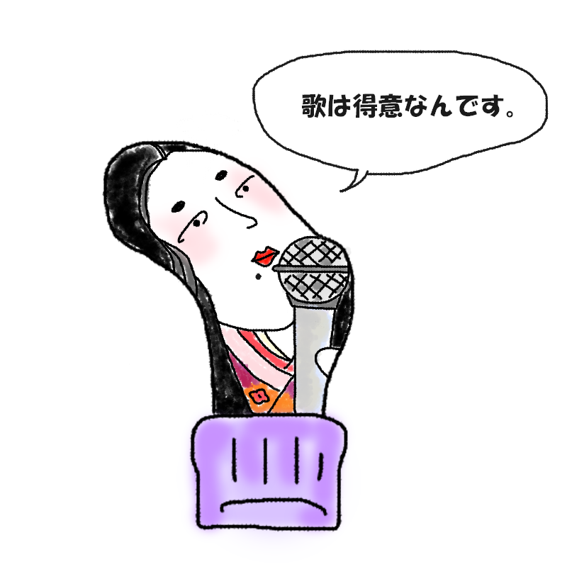

あなたの診断結果
？ ？ ？ （キャラクター名前募集中）人差し指の先端にあく人
【足ゆび界の圧倒的マドンナ！
美貌で魅了し、ジャイアン級の美声（破壊）で気絶させる歌姫タイプ】

「ふふっ、私に見惚れて穴を開けちゃうなんて罪な指ね……。それじゃあ聞いてちょうだい、私のラブ・ソング（大音量）」
どこにいても眩いオーラを放つカリスマでありながら、ひとたび歌えば周囲の鼓膜を容赦なく破壊する、究極の迷惑歌姫タイプ！
あなたは、「圧倒的な美貌と自信に満ち溢れ、そこに立っているだけですべての視線を強奪してしまう足ゆび界の絶対的トップスター」です。
自分の美しさを寸分の狂いもなく自覚しており、「あまりの輝きに布地が耐え切れず、思わずパカッと道を開けてしまったのね」と本気で納得しています。
その神々しいルックスに引き寄せられて、数多の観客がファンとして集まってくるのですが……最大の悲劇は、彼女（彼）がマイクを握った瞬間から始まります。
ひとたび歌い出せば、ガラスというガラスを粉砕し、聴き手を一発で昏倒させるほどの超ド迫力ジャイアンボイス。
美しすぎる外見と、地響きのような衝撃波ソングのギャップで、周囲を常に阿鼻叫喚の渦に巻き込んでいるトラブルメーカーです。
孤高の歌姫の生態
- 「見られている意識」が常に100％を超えており、足元の穴から顔を出すポーズすら計算し尽くされている
- 人を引きつける求心力は本物だが、歌声が響き渡った瞬間に全員がそっと耳を塞ぐ
- 「私の歌、魂に響いたかしら？」と満面の笑みで圧をかけてくるため、誰も逆らえない
- 圧倒的な美貌と、周囲の鼓膜を無視するマイペースさの調和で、なぜか憎めない愛嬌がある
最後にひとつ。
今日も世界をその美貌と大音量で揺らし続けている、孤高のプリマドンナよ。
その眩すぎる歌声を、今すぐすべての人間たちの
鼓膜に叩きつけよ！
このキャラクターに名前をつける
思いついた名前を教えてね！
※このスタンプには日陰に消えたボツキャラが混ざっています
※この診断はただのお遊びです。
※靴下の穴が開く場所には個人差があります。